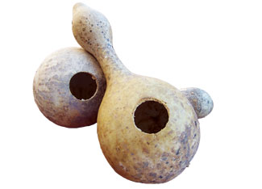

Country Lore: How To Make A Gourd Birdhouse
You can use dried hard-shelled gourds to make birdhouses for purple martins.
By Beverly Nord
August/September 2008
My friend Avi picked up a package of gourd seeds at the local garden shop this past spring. She just wanted something growing on the trellis in her back yard. She was feeling like Jack and the beanstalk when the vines started climbing on the roof of her house. It turns out that the gourds she planted were large enough for martin houses.
Here’s how you can create birdhouses from these large, hard-shelled gourds. When it is time to harvest the gourds, be careful not to cause bruising. Store the gourds in a dry, airy shed or garage. The gourds are dry when they lose all moisture, become light and the seeds can be heard rattling inside. The process may take several months, depending on the humidity. Make holes in the gourds by using a drill, jigsaw or utility knife. Hang the gourds high and in groups, as martins prefer communal living.
Beverly Nord
Round Rock, Texas
|
 MITCHELL NORD Large gourds make great birdhouses for purple martins. |
 MITCHELL NORD Provide a colony of martin houses for optimum mosquito control. |
|